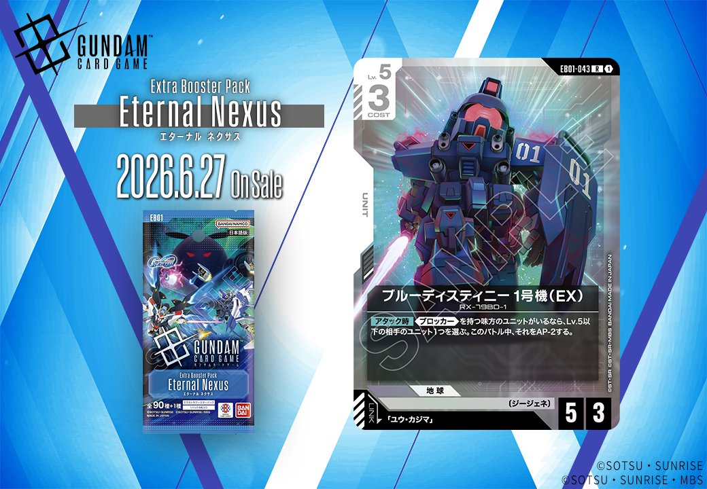

今回は、2026年6月27日発売予定の拡張パック「EB01 Eternal Nexus（エターナル ネクサス）」から、白色のPILOT「ユウ・カジマ」とリンク対象となるUNIT「ブルーディスティニー1号機(EX)」の2枚をご紹介します。

ユウ・カジマ (EB01-072)
| 色 | 白 | タイプ | PILOT |
| Lv | - | コスト | - |
| 特徴 | 〔ジージェネ〕、〔攻撃型〕 | ||
効果: 【バースト】このカードを手札に加える。【セット時】《ブロッカー》を持つアクティブの味方のユニット1つと、Lv.4以下の相手のユニット1つを選ぶ。それらをレストにする。
ユウ・カジマはEB01「Eternal Nexus」で登場する白のパイロットカード。【バースト】で手札に加わり、【セット時】に《ブロッカー》持ちの味方ユニットと、Lv.4以下の相手ユニットを同時にレストにする特殊な効果を持つ。味方のブロッカーをレストにするデメリットはあるが、相手の主力ユニットの行動を封じつつ展開できるため、テンポを取りやすい性能と言える。


ブルーディスティニー1号機(EX) (EB01-043)
| 色 | 白 | タイプ | UNIT |
| Lv | 5 | コスト | 3 |
| AP | 5 | HP | 3 |
| 特徴 | 〔ジージェネ〕 | ||
| リンク条件 | 「ユウ・カジマ」 | ||
効果: 【アタック時】ブロッカーを持つ味方のユニットがいるなら、Lv.5以下の相手のユニット1つを選ぶ。このバトル中、それをAP-2する。
ブルーディスティニー1号機(EX)はCOST3でAP5/HP3という標準的なステータスを持つ白のユニット。【アタック時】にブロッカーを持つ味方がいる場合、Lv.5以下の相手ユニット1体にAP-2を付与する効果で、ブロッカーとの連携を前提とした戦闘サポート能力を持つ。ユウ・カジマとのリンク対応も可能で、2026年6月27日発売予定のEternal Nexusで登場するジージェネ特徴のカードだ。
関連カード

リンク対象カード
関連カード
-
ブルーディスティニー1号機(EX)(EB01-043)NEW白系 — 同色・共通特徴: ジージェネ（新カード）
-
 溢れる慈愛(GD01-118)白系デッキ内採用率38% (452デッキ)
溢れる慈愛(GD01-118)白系デッキ内採用率38% (452デッキ) -
 ガンダム・ルブリス(GD01-086)白系デッキ内採用率37.6% (448デッキ)
ガンダム・ルブリス(GD01-086)白系デッキ内採用率37.6% (448デッキ) -
 エールストライクガンダム(ST04-001)白系デッキ内採用率36.7% (437デッキ)
エールストライクガンダム(ST04-001)白系デッキ内採用率36.7% (437デッキ) -
 キラ・ヤマト(ST04-010)白系デッキ内採用率35.8% (426デッキ)
キラ・ヤマト(ST04-010)白系デッキ内採用率35.8% (426デッキ) -
ユウ・カジマ(EB01-072)NEW白系 — 同色・共通特徴: ジージェネ（新カード）